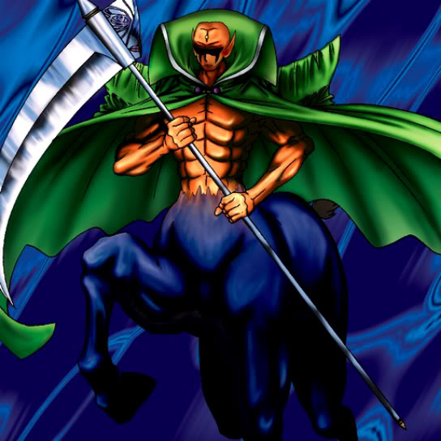

Solitude

Description: "Spellbinds an opponent for 3 turns when destroyed in battle."
STATS
ATK: 1050
DEF: 1000DECK COST
Deck Cost per Card: 26EFFECT NOT IMPLEMENTED
Fusion List (3 Possible Fusions)
- Solitude + Mystical Sheep #2 = Mystical Sheep #1
- Solitude + Protector of the Throne = Invader of the Throne
- Solitude + Wicked Dragon with the Ersatz Head = Koumori Dragon